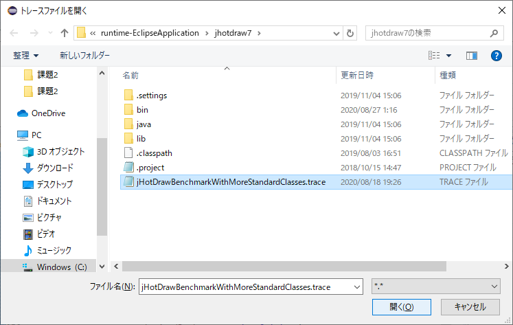

クリックしてトレースファイル (C:\Users\userXX\runtime-EclipseApplication\jhotdraw7\jHotDrawBenchMarkWithMoreStandardClasses.trace) を開いてください.

クリックしてトレースデバッガ用のブレークポイントを作成してください.
トレースデバッガによるデバッグ実行が起動し, ブレークポイントを入れた位置の行が選択された状態で一時停止します.

課題B1では, JHotDrawの図形の移動機能について見ていきます.
具体的には,
「選択された図形がJHotDrawのシステム内部でどのように管理され，図形移動機能の実行によってどのように取り出されて，移動していくか?」を理解することを目指して, 以下のようにトレースデバッガを操作していきます.
Figure クラスは図形を表す JHotDraw のクラスです.
また, RectangleFigure クラスは矩形を表す JHotDraw のクラスで, Figure クラスの子孫クラスにあたります.
ブレークポイントを置いた行は、図形を移動するたびに実行されます.
先ほどの実行手順にしたがって進めていくと, 下図のように DefaultDragTracker クラスの
mouseDragged(MouseEvent) メソッド内の159行目で一時停止している状態になっているはずです.
この状態になっていれば, ここから時間計測を開始してください. 時間計測はできる限り，1分以内の単位での計測をお願いします.
DefaultDragTracker クラスの mouseDragged(MouseEvent) メソッドの159行では,
ローカル変数 f で参照されているインスタンスに対してメソッドが呼び出されていることが確認できます.
ここで, 変数ビュー上の「呼び出し前」を開いてレシーバのIDを見ると, これは RectangleFigure クラスのインスタンス (id = 1952912699) であることがわかります.
また, ソースコードを見ると, このローカル変数 f の値は, 157行目の拡張for文でフィールド transformedFigures が参照しているセットから取得してきたものだと確認できます.
次は, フィールド transformedFigures に RectangleFigure クラスのインスタンス (id = 1952912699) を実際に追加しているのはどこなのかを見ていきます.
ソースコード中の157行目の transformedFigures にカーソルを入れ, そのフィールドに対してオブジェクトを追加している全ての行にブレークポイントを入れてください.
今回は DefaultDragTracker クラスの118行目のみです。
ここで, いったんデバッグ実行を終了してから, ブレークポイントビュー上にある「ブレークポイントをEclipseから取り入れる」アイコンを押してください.
そのあと, 再びデバッグ実行すると今度は118行目に止まります.
ステップインを2回押してから変数ビュー上の「呼び出し前」 (HashSet.add(Object) の呼び出し前) を開いて引数のオブジェクトのIDを確認してください.
すると, 先ほど確認した RectangleFigure クラスのインスタンス (id = 1952912699) がここで追加されていることがわかります.
ここで, 最初にブレークポイントを入れた地点である159行目に実行が進むかどうかを確認します.
再開を1回押すと, すぐには159行目に移らず, 同じ118行目に再び止まります.
先ほどと同様に, ステップインを2回押してから, 変数ビュー上の「呼び出し前」を開いて引数のオブジェクトのIDを確認してください.
すると, ここでも同じ RectangleFigure クラスのインスタンス (id = 1952912699) が追加されていることがわかります.
再び再開ボタンを押すと, 今度は159行目に止まります.
ここで, 変数ビューの「呼び出し前」を開いてレシーバのIDを見ると, 先ほどの RectangleFigure クラスのインスタンス (id = 1952912699) と同一であることが確認できます.
したがって, ここでは直前に止まっていた118行目の2回目の実行で追加した RectangleFigure クラスのインスタンスを取得していることがわかります.
それを確認したら, ここでいったんデバッグ実行を終了してください.
ソースコードを見ると, 116行目の拡張for文で DrawingView クラスの getSelectedFigures() メソッドを呼び出し,
その戻り値のコレクションから取得してきた RectangleFigure クラスのインスタンスを, 118行目で transformedFigures に追加していることがわかります.
そこで, 次はこの view がどこから来たのかと, getSelectedFigures() メソッドの戻り値がどうやって来たのかを見ていきます.
98行目と116行目にブレークポイントを入れ, ブレークポイントビュー上にある「ブレークポイントをEclipseから取り入れる」アイコンを押してください.
そのあと, 再びデバッグ実行すると, まずは98行目で止まることを確認してください.
先ほどの実行によって, 現在は98行目に止まっているはずです.
この状態で再開ボタンを押していくと, 現在の実行時点が 116行目 → 118行目 → 98行目 → 116行目 → 118行目と移り変わることを確認してください.
この操作によって, 98行目と116行目と118行目はそれぞれ2回ずつ実行されていることが確認でき, したがって,
98行目も116行目も2回目に止まった方が直前に実行されたものだとわかります. ここでいったんデバッグ実行を終了して下さい.
そのままの状態で再びデバッグ実行し, 再開ボタンを3回押して98行目の2回目の実行に止まって下さい.
ここで, ステップインを1回押して getView() メソッドの中に入ってください.
AbstractTool クラスの getView() メソッドに入りました.
ここで, 変数ビュー上の this を開くと, DefaultDragTracker クラスのインスタンス(id = 758826749) の
フィールド editor が DefaultDrawingEditor クラスのインスタンス (id = 1859859960) を参照していることがわかります.
これを確認したら, ステップインを3回押して getActiveView() メソッドの中に入ってください.
DefaultDrawingEditor クラスの getActiveView() メソッドに入りました.
ここで, 変数ビュー上の this を開くと, DefaultDrawingEditor クラスのインスタンス (id = 1859859960) の
フィールド activeView が DefaultDrawingView クラスのインスタンス (id = 150367587) を参照していることがわかります.
これを確認したら, ステップリターンを1回押して呼び出し元に戻ってください.
(このとき, 2つ呼び出し元である DefaultDragTracker クラスの mousePressed(MouseEvent) メソッドまで戻ることに注意してください)
先ほどの操作によって, 現在の実行時点は DefaultDragTracker クラスの mousePressed(MouseEvent) メソッドの106行目になっているはずです.
ここでは, ステップオーバーを4回押して116行目まで進んでください.
116行目まで進んだら, 変数ビュー上の「呼び出し前」を開いて, レシーバのオブジェクトのIDを見ると,
先ほど取得してきた DefaultDrawingView クラスのインスタンス (id = 150367587) に対して getSelectedFigures() メソッドが呼び出されていることがわかります.
これを確認したら, ステップインを1回押して, このメソッドの中に入ってください.
DefaultDrawingView クラスの getSelectedFigures() メソッドの中に入りました.
ここで, 変数ビュー上の this を開くと, DefaultDrawingView クラスのインスタンス (id = 150367587) の
フィールド selectedFigures が LinkedHashSet のインスタンスを参照していることがわかります.
また, ソースコードを見ると, Collections クラスの static メソッドである unmodifiableSet(Set) が呼び出されており,
その引数として フィールド selectedFigures が渡されていることが確認できます.
この Collections#unmodifiableSet(Set) は引数として渡されたセットを Collections$UnmodifiableSet のインスタンスに変換して返すメソッドです.
これを確認したら, 呼び出しスタック上で1つ呼び出し元をクリックしてください.

現在は DefaultDragTracker クラスの mousePressed(MouseEvent) メソッドの116行目を見ています.
ここで課題B1は終了です. 時間計測を終了してください.
また, 終了アイコンを押して, デバッグ実行を終了しておいてください.
課題B1の機能理解が終了しましたら, 以下のアンケートにお答えください.
次へ